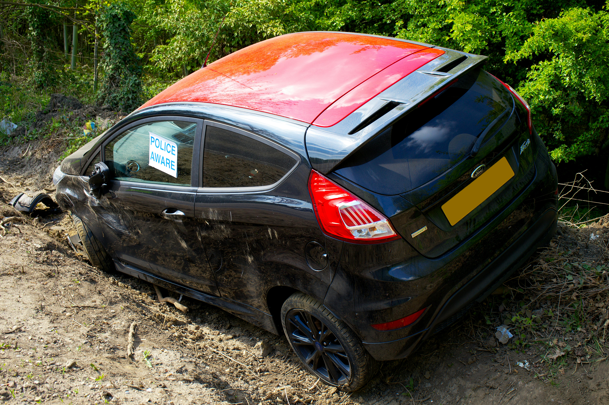

Fly Tipping and Waste Enforcement
Reduce backlog, improve investigation outcomes and increase enforcement action against offenders. Practical support designed for real council workloads.

Environmental Enforcement Consultancy
30 years frontline experience supporting UK councils tackling fly tipping, abandoned vehicles and environmental crime.
Request a ConsultationReduce backlog, improve investigation outcomes and increase enforcement action against offenders. Practical support designed for real council workloads.
Practical training covering PACE compliance, evidence gathering, interviews and prosecution ready case building.
Improve case handling efficiency and clear backlogs while remaining fully compliant with legislation.

Contract enforcement support, case reviews, expert advice and policy development tailored to local authority needs.
Environmental Protection within UK local government
Real world enforcement delivery, not theory
Rapid improvements to performance and outcomes
District councils, unitary authorities, enforcement teams and environmental services managers across the UK.
Discuss your requirements and current challenges.
Contact Now